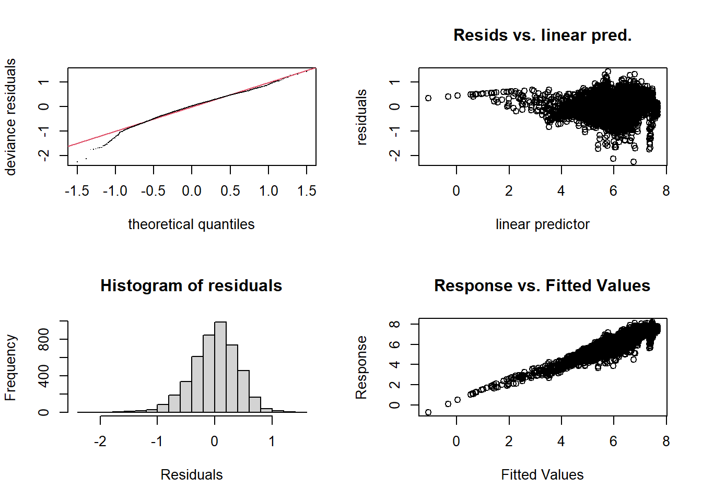
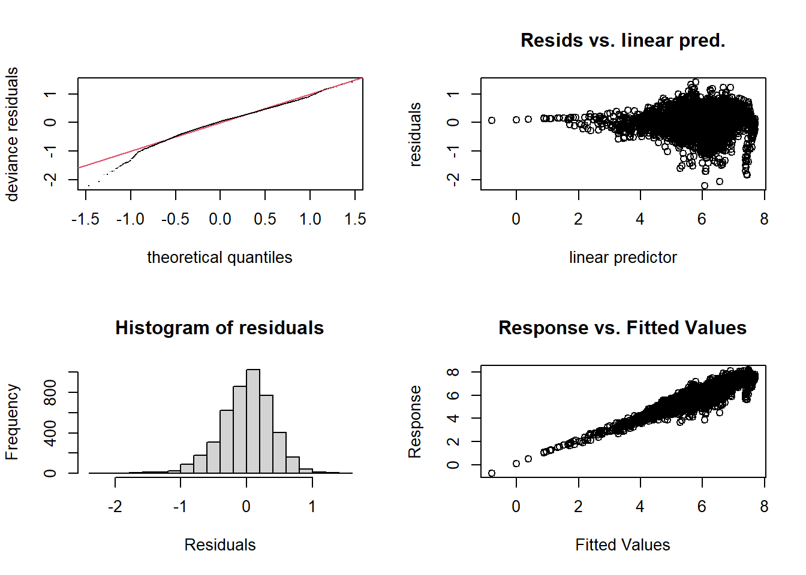
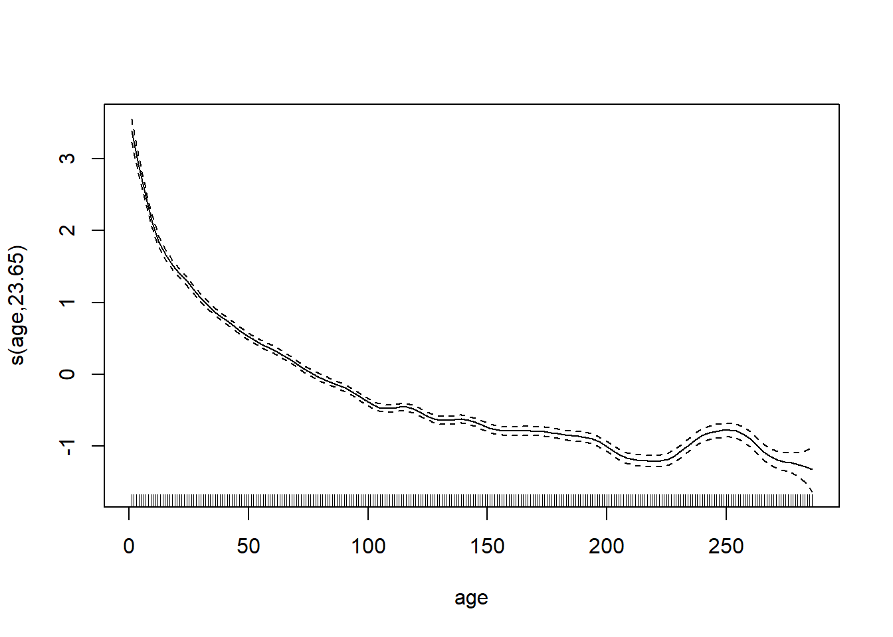
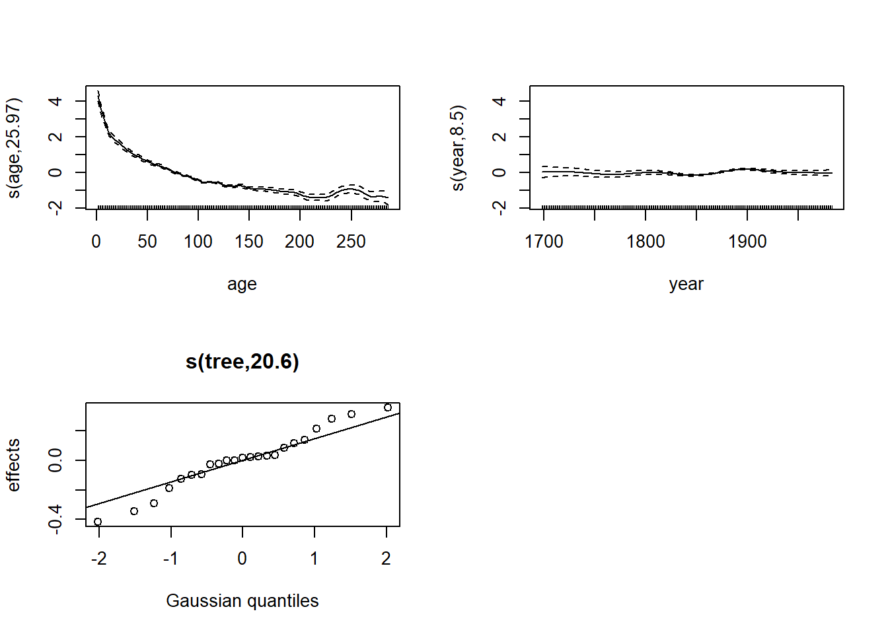
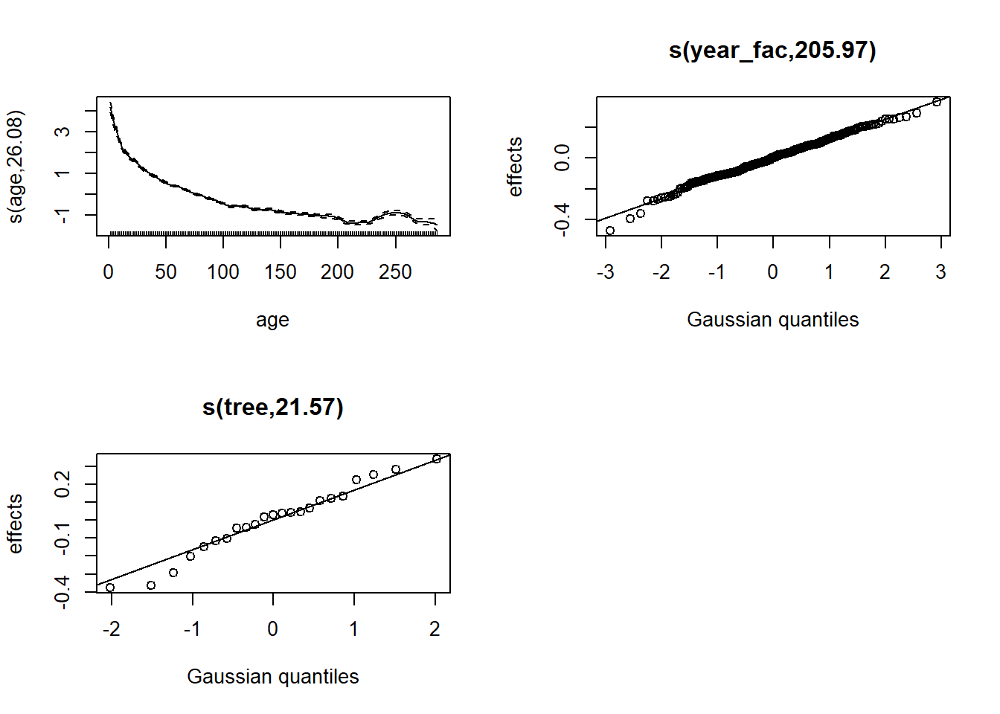

Generalized additive models - Solutions
Data
The dendro_wa082.csv
dataset, based on the wa082 dataset included in the
dplR package, contains dendrochronological series of 23 Pacific
silver firs (Abies amabilis) sampled in the state of Washington
(northwestern USA). The first column represents the year and each other
column represents the annual basal area increment (BAI) of a tree, as
determined by tree rings. Missing values (NA) represent
years prior to the formation of the first tree ring.
wa <- read.csv("../donnees/dendro_wa082.csv")
wa[1:5, 1:8]## year X712011 X712012 X712021 X712022 X712031 X712032 X712041
## 1 1698 NA NA NA NA NA NA NA
## 2 1699 NA NA NA NA NA NA NA
## 3 1700 NA NA NA NA NA NA NA
## 4 1701 NA NA NA NA NA NA NA
## 5 1702 NA NA NA NA NA NA NA1. Data preparation
- Use the
pivot_longerfunction of the tidyr package to transformwain a table with three columns: year, tree and basal area increment (bai).
Solution
library(tidyr)
wa <- pivot_longer(wa, cols = c(-year), names_to = "tree", values_to = "bai",
values_drop_na = TRUE)
head(wa)## # A tibble: 6 x 3
## year tree bai
## <int> <chr> <dbl>
## 1 1698 X712122 6.79
## 2 1699 X712122 15.3
## 3 1700 X712122 24.3
## 4 1701 X712122 21.9
## 5 1702 X712101 12.4
## 6 1702 X712122 28.9- Add columns to represent the age and basal area (cumulative growth)
for each tree-year pair. With the dplyr package, you can sort
the data by tree and year, group the data by tree, then calculate the
age with
row_numberand the basal area withcumsum(cumulative sum).
Solution
library(dplyr)
wa <- arrange(wa, tree, year) %>%
group_by(tree) %>%
mutate(age = row_number(), ba = cumsum(bai))
head(wa)## # A tibble: 6 x 5
## # Groups: tree [1]
## year tree bai age ba
## <int> <chr> <dbl> <int> <dbl>
## 1 1811 X712011 7.35 1 7.35
## 2 1812 X712011 19.2 2 26.6
## 3 1813 X712011 32.3 3 58.9
## 4 1814 X712011 48.6 4 108.
## 5 1815 X712011 58.5 5 166.
## 6 1816 X712011 67.4 6 233.- Illustrate the growth series of each tree. It is recommended to show the logarithm of the basal area increment.
Solution
library(ggplot2)
ggplot(wa, aes(x = year, y = log(bai), color = tree)) +
geom_line()
2. Growth according to age and basal area
The annual growth of a tree depends on both intrinsic (e.g. age and current size of the tree) and extrinsic factors, including climatic conditions. In order to isolate the effect of climate on growth, it is therefore necessary to remove from the growth series the trend due to the age and size of each tree. Here we will use a GAM to estimate this trend, with a form of the model similar to that proposed in the study by Girardin et al. (2016).
- Fit an additive model with the formula
log(bai) ~ log(ba) + s(age), where bai is the basal area increment of the year and ba is the basal area. Make sure that the \(k\) parameter of the spline is high enough. How do you interpret the coefficient oflog(ba)? How do you (briefly) describe the effect of age?
Solution
library(mgcv)
wa_gam <- gam(log(bai) ~ log(ba) + s(age), data = wa, method = "REML")
gam.check(wa_gam)
##
## Method: REML Optimizer: outer newton
## full convergence after 6 iterations.
## Gradient range [-0.002176761,0.001913562]
## (score 2379.275 & scale 0.1645973).
## Hessian positive definite, eigenvalue range [3.740538,2266.509].
## Model rank = 11 / 11
##
## Basis dimension (k) checking results. Low p-value (k-index<1) may
## indicate that k is too low, especially if edf is close to k'.
##
## k' edf k-index p-value
## s(age) 9.00 8.92 0.94 <2e-16 ***
## ---
## Signif. codes: 0 '***' 0.001 '**' 0.01 '*' 0.05 '.' 0.1 ' ' 1The \(k\) diagnostic test gives a
significant result with an edf close to the chosen \(k\). In this case, it is useful to increase
the value of \(k\) so that the test is
no longer significant.
wa_gam <- gam(log(bai) ~ log(ba) + s(age, k = 30), data = wa, method = "REML")
gam.check(wa_gam)
##
## Method: REML Optimizer: outer newton
## full convergence after 5 iterations.
## Gradient range [-3.704099e-08,1.570066e-08]
## (score 2313.319 & scale 0.1583401).
## Hessian positive definite, eigenvalue range [7.664169,2266.557].
## Model rank = 31 / 31
##
## Basis dimension (k) checking results. Low p-value (k-index<1) may
## indicate that k is too low, especially if edf is close to k'.
##
## k' edf k-index p-value
## s(age) 29.0 23.7 0.98 0.15plot(wa_gam, pages = 1)
The growth rate decreases with the age of the tree.
- Now add a random effect of the tree on the intercept of the model in
(a). Check the fit of the model, including the normality of the random
effects. What is the fraction of the variance of
log(bai)explained by this model?
Solution
wa$tree <- as.factor(wa$tree)
wa_gam <- gam(log(bai) ~ log(ba) + s(age, k = 30) + s(tree, bs = "re"), data = wa, method = "REML")
gam.check(wa_gam)
##
## Method: REML Optimizer: outer newton
## full convergence after 5 iterations.
## Gradient range [-0.0004022263,0.0003553361]
## (score 1860.646 & scale 0.1267303).
## Hessian positive definite, eigenvalue range [8.990974,2266.619].
## Model rank = 54 / 54
##
## Basis dimension (k) checking results. Low p-value (k-index<1) may
## indicate that k is too low, especially if edf is close to k'.
##
## k' edf k-index p-value
## s(age) 29.0 25.6 1.06 1
## s(tree) 23.0 21.5 NA NAExcept for the portion to the left of -0.6 on the \(x\) axis, the residuals approximately follow a normal distribution.
plot(wa_gam, pages = 1)
Random effects deviate slightly from normal for the smallest values (bottom left).
summary(wa_gam)##
## Family: gaussian
## Link function: identity
##
## Formula:
## log(bai) ~ log(ba) + s(age, k = 30) + s(tree, bs = "re")
##
## Parametric coefficients:
## Estimate Std. Error t value Pr(>|t|)
## (Intercept) -4.48838 0.18094 -24.81 <2e-16 ***
## log(ba) 1.05700 0.01763 59.96 <2e-16 ***
## ---
## Signif. codes: 0 '***' 0.001 '**' 0.01 '*' 0.05 '.' 0.1 ' ' 1
##
## Approximate significance of smooth terms:
## edf Ref.df F p-value
## s(age) 25.63 27.92 76.55 <2e-16 ***
## s(tree) 21.49 22.00 50.60 <2e-16 ***
## ---
## Signif. codes: 0 '***' 0.001 '**' 0.01 '*' 0.05 '.' 0.1 ' ' 1
##
## R-sq.(adj) = 0.872 Deviance explained = 87.4%
## -REML = 1860.6 Scale est. = 0.12673 n = 4536According to the adjusted \(R^2\), about 87% of the variance of the BAI is explained by this model.
- Compare two ways of including interannual growth variation in the model in (b): (1) a spline by year (with year as a numerical variable) or (2) a random effect of year (with year as a factor) on the intercept. What are the differences between the assumptions of the two versions of the model?
Solution
wa$year_fac <- as.factor(wa$year)
wa_gam2 <- gam(log(bai) ~ log(ba) + s(age, k = 30) + s(year) +
s(tree, bs = "re"), data = wa, method = "REML")
plot(wa_gam2, pages = 1)
wa_gam3 <- gam(log(bai) ~ log(ba) + s(age, k = 30) + s(year_fac, bs = "re") +
s(tree, bs = "re"), data = wa, method = "REML")
plot(wa_gam3, pages = 1)
The term s(year) indicates that the average growth
varies continuously and non-linearly with the year of the ring, so it
cannot vary “abruptly” from one year to the next.
A random year effect (taken as a factor) means that the interannual variations come from a normal distribution, but there is no constraint that years close together have a similar effect.
- With the function
predict(..., type = "terms"), we can obtain the contribution of each term in the model to the predicted response. Use this method to illustrate the random year effects estimated for the second model in (c).
Solution
wa_pred <- as.data.frame(predict(wa_gam3, type = "terms"))
head(wa_pred)## log(ba) s(age) s(year_fac) s(tree)
## 1 2.125729 4.183970 0.17187951 -0.1028175
## 2 3.495571 3.963411 0.11955750 -0.1028175
## 3 4.342371 3.744199 0.09155797 -0.1028175
## 4 4.983465 3.528336 0.21191525 -0.1028175
## 5 5.446513 3.318353 0.12360307 -0.1028175
## 6 5.809445 3.116985 0.20527496 -0.1028175wa_pred$year <- wa$year
ggplot(wa_pred, aes(x = year, y = `s(year_fac)`)) +
geom_line()
References
Girardin, M.P. et al. (2016) No growth stimulation of Canada’s boreal forest under half-century of combined warming and CO2 fertilization. PNAS 113, E8406-E8414.